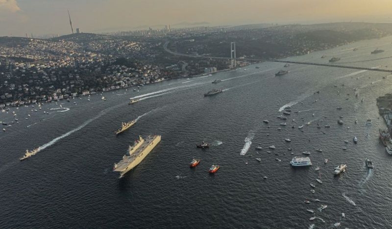

:31.13 ₺
:31.13 ₺
 :28.68 ₺
:28.68 ₺
 :1807.8 ₺
:1807.8 ₺

İSRAİL'DE HÜKÜMETİ KURMA GÖREVİ YENİDEN NETANYAHU'DA: 'BİBİ'NİN GERİ DÖNÜŞ YOLCULUĞU
İsrail Cumhurbaşkanı Isaac Herzog, 1 Kasım'da yapılan seçimlerin ardından eski başbakan Binyamin Netanyahu'ya yeniden hükümeti kurma görevini verdi.
Seçimde aşırı sağcıların desteğiyle, Netanyahu'nun partisi Likud önderliğindeki sağcı blok parlamentodaki 120 sandalyenin 64'ünü kazanmıştı.Hükümeti kurma görüşmelerinin ay sonuna kadar sürmesi ve aşırı sağcı Dini Siyonizm Partisi'ne kilit bakanlıklar teklif edilmesi bekleniyor.
Kurulacak hükümetin İsrail tarihinin en sağcı hükümeti olacağı tahmin ediliyor.
CUMHURİYET'İN 100. YILI TÜRKİYE GENELİNDE COŞKUYLA KUTLANDI

Cumhuriyet’in ilanının 100. yılı bugün Türkiye genelinde coşkuyla kutlandı. 81 ilde sokaklarda geçit törenleri ve meydanlarda kutlamalar düzenlendi. Cumhurbaşkanı Erdoğan akşam saatlerinde, Pazartesi okulların tatil olduğunu açıkladı.
Ankara’da gün boyu en yoğun olan yer Anıtkabir’di. Günün ilk saatlerinden akşama kadar tıklım tıklım olan Anıtkabir’in üzerinde SoloTürk uçuş ekibi de bir gösteri düzenledi.
Ankara’da belli noktalarda da halk konserleri düzenlendi. İstanbul’da valilik ve belediyeler tarafından Vatan Caddesi ile Üsküdar Sahili’nde düzenlenen resmi geçitlere katılım yoğundu.Kutlamalar öğleden sonra İstanbul Boğazı’nda düzenlenen Türk Yıldızları ve SoloTürk uçuş gösterileriyle devam etti.
ARJANTİNLİ SEYİRCİLERİ KIZDIRMAK İÇİN ÜLKENİN PARASI PESOYU YAKAN YABANCI TARAFTARLAR CEZALANDIRILACAK
Arjantin, yerli seyirciyi kızdırmak için maçlarda, değeri çok düşen para birimi Arjantin pesosu yakan ya da yırtan yabancı taraftarların cezalandırılacağını açıkladı.
Arjantin'in Sporda Şiddeti Önleme Kurumu, para yırtma ve yakmanın, spor karşılaşmalarında "kavga kışkırtma" ve "kamu düzenini bozucu provokasyonlar" ile ilgili mevcut yasaları ihlal ettiğini söylüyor.
Açıklamaya göre bu yola başvuran yabancı taraftarlar Arjantin polisi tarafından gözaltına alınacak ve parayı aşağılayıcı eylemler devam ederse taraftarların desteklediği kulüpler de cezalandırılabilecek.
Arjantin'de yıllık enflasyon oranı son yıllarda giderek yükseldi ve bu yılın başlarında, 1990'lardaki hiperenflasyon krizinin sona ermesinden bu yana ilk kez yüzde 100'ü aştı. Bu durum, ülkenin parasının da hızla değer kaybetmesine sebep oluyor. Şubat ayında, en değerli banknot 1000 pesonun değerinin, alternatif piyasalarda 2,70 dolara düşmesi üzerine Arjantin merkez bankası yeni 2000 pesoluk banknotlar bastı.